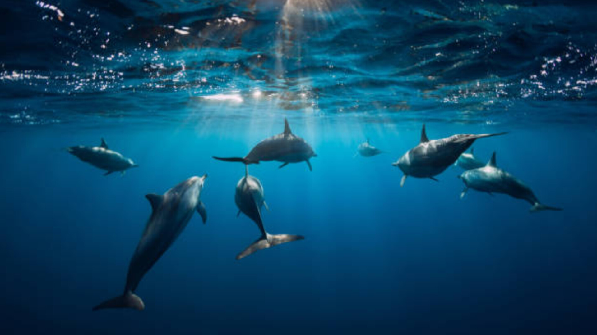

Learn about the Earth's water bodies, their types, importance, and conservation.
| Ocean Name | Area (sq km) | Average Depth | Covers % of Earth |
|---|---|---|---|
| Pacific Ocean | 168,723,000 | 4,280 m | 46.6% |
| Atlantic Ocean | 85,133,000 | 3,646 m | 23.5% |
| Indian Ocean | 70,560,000 | 3,741 m | 19.5% |
| Southern Ocean | 21,960,000 | 3,270 m | 5.4% |
| Arctic Ocean | 15,558,000 | 1,205 m | 4.1% |
1.Pacific
2.Atlantic
3. Indian
4.Southern
5. Arctic Oceans.
Only about 2.5% of the Earth's water is freshwater.
It’s the decrease in pH of the ocean caused by uptake of CO₂ from the atmosphere.
The ocean's beauty is tinged with danger, vastness, and limitlessness, forcing us to question our perspective of the planet and our place in it. Filled with awe, we feel small and temporary—emotions that are not always easy, but that can also make us think less about ourselves and more about our community.
The ocean is the body of salt water that covers approximately 70.8% of Earth.
Looking at the ocean activates opiate receptors in the brain, releasing dopamine and its rush of reward. Even when people are in a good mood, they still seek out the water. The thin line where blue meets blue holds the gaze a bit longer, allowing the mind to wander.
The oceans are estimated to contain between 260,000 and 2.2 million marine species. While the World Register of Marine Species (WoRMS) lists about 242,000 known and described species, scientists believe there are many more yet to be discovered. Some experts estimate the total number could be as high as 10 million.
The ocean covers 71 percent of the Earth's surface, and 50-80 percent of all life is found under its surface. Millions of people rely on the ocean for their livelihood.
The blue whale is the largest aspecies in the ocean and the largest animal on Earth. They can grow up to 100 feet long and weigh up to 200 tons.
The vast majority of the ocean, around 95%, remains unexplored due to a combination of factors including immense size, extreme conditions, and technological limitations. The deep ocean presents extreme pressure, low visibility, and freezing temperatures, making it challenging and expensive to explore. Furthermore, the sheer scale of the ocean requires significant resources and time to map and investigate.